Breakthroughs in Spectroscopy#
“Spectroscopy is past, present, and future all at once: it tells us what things are made of, and it is the only way we can ever know what the stars are made of.” – paraphrasing the spirit of Auguste Comte’s 1835 claim that the chemical composition of the stars would forever lie beyond human knowledge – a claim spectroscopy would spend the following decades quietly disproving.
Spectroscopy is the practice of reading a molecule’s identity and
structure off the light it absorbs, emits, or scatters – turning an
otherwise invisible property (a bond’s force constant, a nucleus’s local
magnetic environment, an electronic potential-energy surface’s shape)
into a directly measurable pattern of lines. chemistrykit.spectro
gathers computational models for the four spectroscopic techniques a
working chemist reaches for most often – rotational (microwave),
vibrational (infrared), electronic (UV-Vis), and NMR spectroscopy – on
top of the Beer-Lambert absorbance law that makes any of them
quantitative, and the lineshape machinery that turns a set of predicted
transition energies into something that looks like a real recorded
spectrum. This chronology traces the major breakthroughs behind it, from
Bouguer’s eighteenth-century observation that light dims exponentially
through an absorbing medium to Ernst and Anderson’s 1966 Fourier-transform
NMR, with a pointer to the
corresponding implementation in this package at each stop.
1729 – 1852 – Bouguer, Lambert, and Beer’s Absorption Law#
Pierre Bouguer first observed, in his 1729 Essai d’optique sur la gradation de la lumière, that light is attenuated by a fixed fraction of its remaining intensity for each equal thickness of absorbing medium it crosses – an exponential law, not a linear one. Johann Heinrich Lambert gave the observation its now-standard logarithmic form in his 1760 Photometria, still expressed purely in terms of path length; it was August Beer, nearly a century later, who showed in 1852 that the same exponential dependence holds on a dissolved absorber’s concentration as well, letting the two dependences be combined into the single law that bears both their names (though, by the letter of the history, Bouguer’s priority on the path-length dependence means the law is also, and arguably more correctly, called the Bouguer-Beer law in much of the non-English-language literature):
Absorbance \(A\) is exactly linear in both concentration \(c\) and path length \(l\), with the molar absorptivity \(\varepsilon\) the proportionality constant – a law so foundational to quantitative chemical analysis that entire instrument classes (the spectrophotometer) and laboratory techniques (concentration determination by UV-Vis) exist purely to exploit it.
Implementation: absorbance()
implements exactly this law, with
transmittance() and
concentration_from_absorbance()
as its direct consequence and inverse;
apparent_absorbance_with_stray_light()
models one specific, well-characterized instrumental effect (stray light
reaching the detector without passing through the full sample path) that
causes real instruments to deviate from this exact linearity at high
absorbance – the “rolling over” every analytical chemist is warned to
watch for.
References: P. Bouguer, Essai d’optique sur la gradation de la lumière (Claude Jombert, Paris, 1729); J. H. Lambert, Photometria, sive de mensura et gradibus luminis, colorum et umbrae (Augsburg, 1760); A. Beer, “Bestimmung der Absorption des rothen Lichts in farbigen Flüssigkeiten,” Ann. Phys. Chem. 162, 78-88 (1852). Three books/journal volumes spanning over a century – no single DOI covers the combined law.
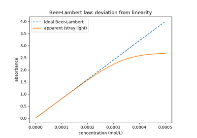
Beer-Lambert absorbance, and its deviation from linearity at high concentration
1814 – 1817 – Fraunhofer’s Dark Lines and the Birth of Spectral Analysis#
Joseph von Fraunhofer, testing the optical glass his Munich workshop manufactured, needed a source of light purer than a simple flame to measure refractive indices precisely. Turning a prism spectroscope of his own design on sunlight, he found the solar spectrum was not the smooth, continuous rainbow William Wollaston had glimpsed a few dark gaps in a decade earlier, but was crossed by hundreds of sharp, dark lines at fixed, reproducible positions – lines he catalogued, labeled with the letters A through K still used for the most prominent ones today, and measured with a precision no one had previously thought the phenomenon warranted. Fraunhofer had no explanation for what caused the lines; that would take Kirchhoff and Bunsen another four decades. What he did establish, simply by the discipline of his cataloguing, is the idea spectroscopy is built on: a light source’s spectrum is not an undifferentiated continuum but a reproducible pattern of discrete lines at fixed positions, specific enough to serve as a fingerprint – a principle Fraunhofer confirmed further by showing that a candle flame’s own bright emission line sat at exactly the position of one of the Sun’s dark lines (what would later be recognized as sodium’s D line).
Connection: every model in this subpackage ultimately produces the
same abstraction Fraunhofer’s catalogue first demonstrated the physical
reality of: a discrete set of line positions and intensities, exactly
what chemistrykit.spectro.core.base_system.Spectrum represents
as its positions/intensities arrays, whether the underlying
lines are rotational, vibrational, electronic, or nuclear-magnetic in
origin.
References: J. Fraunhofer, “Bestimmung des Brechungs- und Farbenzerstreuungsvermögens verschiedener Glasarten, in Bezug auf die Vervollkommnung achromatischer Fernröhre,” Denkschriften der Königlichen Akademie der Wissenschaften zu München 5, 193-226 (1814/1815). A Denkschrift (memoir), not a journal article in the modern sense – there is no DOI to cite.
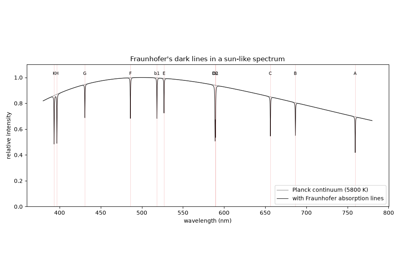
Fraunhofer’s dark lines: sharp absorption lines at fixed wavelengths in the solar spectrum
1859 – 1861 – Bunsen, Kirchhoff, and Flame Emission Spectroscopy#
Robert Bunsen, whose newly perfected burner produced an all-but-colorless flame, and Gustav Kirchhoff, a theoretical physicist, joined forces at Heidelberg to ask what Fraunhofer had not: what physically produces a spectrum’s lines, and can that be turned into a tool for chemical identification? Kirchhoff supplied the theoretical answer in 1859-1860, in three empirical laws relating a substance’s emission and absorption spectra: a hot, dense (incandescent solid, liquid, or high-pressure gas) source emits a continuous spectrum; a hot, low-density gas emits a spectrum of discrete bright lines, at wavelengths characteristic of its constituent elements; and that same gas, if a continuous spectrum is passed through it while it is cooler than the source, absorbs at exactly those same characteristic wavelengths – explaining Fraunhofer’s dark solar lines at last, as absorption by cooler gases in the Sun’s own outer atmosphere superimposed on the continuous spectrum radiating from below. Bunsen and Kirchhoff turned the emission side of this into a working analytical method, vaporizing salts in the burner’s flame and recording their characteristic bright-line spectra; applying it to the residue of Dürkheim mineral water in 1860, they found spectral lines that matched no known element and announced the discovery of caesium (named for the sky-blue color of its brightest lines), followed in 1861 by rubidium (named for its deep-red lines) from the same residue – the first two elements ever discovered by spectroscopic means rather than by chemical isolation, and the demonstration that made flame emission spectroscopy an accepted analytical technique overnight.
Connection: the discrete “stick spectrum” every model in this
subpackage produces – a set of positions and relative intensities,
chemistrykit.spectro.core.base_system.Spectrum – is exactly
the object Bunsen and Kirchhoff’s method reads a substance’s identity
from; broaden_stick_spectrum()
turns that idealized stick pattern into the continuous, finite-resolution
curve any real spectrometer – Bunsen and Kirchhoff’s prism instrument
included – actually records.
References: G. Kirchhoff, “Ueber den Zusammenhang zwischen Emission und Absorption von Licht und Wärme,” Monatsberichte der Königlichen Preussischen Akademie der Wissenschaften zu Berlin, 783-787 (1859); G. Kirchhoff and R. Bunsen, “Chemische Analyse durch Spectralbeobachtungen,” Ann. Phys. Chem. 186, 161-189 (1860) (the analytical method, and the discovery of caesium); Ann. Phys. Chem. 189, 337-381 (1861) (rubidium).
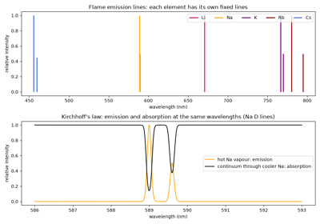
Kirchhoff and Bunsen’s flame spectra: bright emission lines and matching dark absorption lines
1885 – 1913 – Balmer, Rydberg, Bohr, and the Hydrogen Spectrum#
Johann Jakob Balmer, a Basel schoolteacher with no background in spectroscopy, noticed in 1885 that the wavelengths of the four visible hydrogen lines measured by Ångström fit a single simple formula, \(\lambda = B\,n^2/(n^2-4)\) with \(n=3,4,5,6\) and \(B\approx 364.56\) nm. Further ultraviolet lines, already measured by William Huggins in the spectra of white stars, fit the same formula with \(n\ge7\). Johannes Rydberg rewrote the pattern in wavenumbers and extended it to other series and other elements (1890):
This form suggested that every line is a difference of two terms. Niels Bohr explained why in 1913. The electron in hydrogen occupies quantized levels \(E_n=-hcR/n^2\), and each line is a jump between two of them. Bohr’s model also gave \(R\) in terms of fundamental constants, with a small reduced-mass correction \(R_M=R_\infty/(1+m_e/M)\) that depends on the nucleus. The Lyman (\(n_1=1\), ultraviolet), Balmer (\(n_1=2\), visible) and Paschen (\(n_1=3\), infrared) series all converge on series limits that equal the ionization energies from those levels.
Implementation: rydberg_wavenumber()
evaluates the Rydberg formula for any hydrogen-like atom of nuclear
charge \(Z\), optionally with the reduced-mass correction for a
finite nuclear mass. It reproduces Balmer’s formula exactly with
\(B=4/R_H\).
References: J. J. Balmer, “Notiz über die Spectrallinien des Wasserstoffs,” Ann. Phys. Chem. 261, 80-87 (1885); J. R. Rydberg, “Recherches sur la constitution des spectres d’émission des éléments chimiques,” Kongl. Svenska Vetenskaps-Akademiens Handlingar 23, No. 11 (1890); N. Bohr, “On the Constitution of Atoms and Molecules,” Phil. Mag. 26, 1-25 (1913).
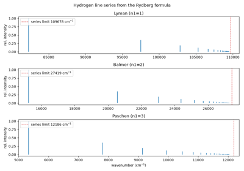
The hydrogen spectrum: Balmer’s formula, the Rydberg series, and Bohr’s energy levels
1895 – 1912 – Michelson, Lorentz, and Voigt: the Physical Origins of Spectral Lineshapes#
A real spectral line is never an infinitely sharp mathematical stick; it has a finite, measurable width and shape, and two genuinely distinct physical mechanisms produce two genuinely distinct shapes. Albert Michelson, in “On the Broadening of Spectral Lines” (1895), showed that a gas’s thermal (Maxwell-Boltzmann) distribution of line-of-sight velocities Doppler-shifts each individual emitting or absorbing molecule’s contribution by a different, momentarily random amount, summing to a Gaussian line profile whose width grows with temperature – “inhomogeneous” broadening, since it comes from a distribution of slightly different sub-populations rather than any change to a single molecule’s own emission. Hendrik Lorentz’s classical electron theory of dispersion, presented in his 1906 Columbia University lectures and published as The Theory of Electrons (1909), treated an emitting atom as a damped, radiating classical oscillator, whose exponentially decaying amplitude Fourier-transforms to a Lorentzian frequency profile – the shape of “homogeneous” broadening (a finite excited-state lifetime, or frequent collisions that interrupt the phase of the emission, acting identically on every molecule in the sample) rather than a distribution across different molecules. Woldemar Voigt, in 1912, worked out the lineshape produced when both mechanisms contribute together: the mathematical convolution of a Gaussian and a Lorentzian, a profile with a Gaussian-like core and Lorentzian-like tails that has to be evaluated via the complex error (Faddeeva) function rather than any elementary closed form. Comparing a measured line’s shape against these three idealized profiles remains the standard first diagnostic for identifying which broadening mechanism – or mixture of both – dominates a given spectroscopic measurement.
Implementation: gaussian()
and lorentzian() implement
exactly these two normalized profiles, and
voigt() their convolution
via the numerically stable Faddeeva-function evaluation
(scipy.special.wofz);
broaden_stick_spectrum()
applies any of the three to an entire stick spectrum at once, and
broaden() exposes
that broadening directly on every model’s output spectrum.
References: A. A. Michelson, “On the Broadening of Spectral Lines,” Astrophys. J. 2, 251-263 (1895); H. A. Lorentz, The Theory of Electrons and Its Applications to the Phenomena of Light and Radiant Heat (Teubner, Leipzig, 1909; based on his 1906 lectures at Columbia University); W. Voigt, “Das Gesetz der Intensitätsverteilung innerhalb der Linien eines Gasspektrums,” Sitzungsberichte der Bayerischen Akademie der Wissenschaften, mathematisch-physikalische Klasse, 603-620 (1912).
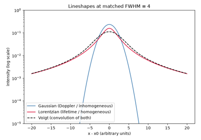
Gaussian, Lorentzian, and Voigt lineshapes: two broadening mechanisms and their convolution
1921 – 1928 – Raman’s Discovery of Inelastic Light Scattering#
C. V. Raman’s interest in how light scatters from transparent media grew out of a 1921 sea voyage from England to India, during which he became dissatisfied with the standard explanation (simple reflection of the sky) for the deep blue color of the Mediterranean – prompting the research into molecular light scattering that would occupy him for the rest of the decade. The discovery of the effect that now bears his name came later and elsewhere: on 28 February 1928, in his laboratory at the Indian Association for the Cultivation of Science in Calcutta, Raman and his student K. S. Krishnan observed that a small fraction of monochromatic light scattered by a liquid emerges shifted in frequency by amounts corresponding to the scattering molecules’ own vibrational (or rotational) energy-level spacings – inelastic scattering, in contrast to the much stronger, unshifted elastic (Rayleigh) scattering that dominates the same experiment. (The 1921-voyage anecdote is genuine, and genuinely the origin of Raman’s interest in light scattering, but it is frequently – and incorrectly – retold as the occasion of the discovery itself; the effect was found seven years later, on land, in Calcutta.) Raman won the 1930 Nobel Prize in Physics for the discovery, the first Asian scientist to win a Nobel Prize in the sciences while working entirely in Asia. Because a Raman-active vibration and an infrared-active vibration obey selection rules governed by different symmetry requirements (a changing polarizability for Raman, a changing dipole moment for infrared), a centrosymmetric molecule’s normal modes obey a mutual exclusion rule: no mode can be active in both spectra at once.
Connection:
chemistrykit.spectro.systems.vibrational.TriatomicNormalModes’s
linear-CO2 normal-mode calculation reproduces exactly this mutual
exclusion rule in miniature: CO2’s centrosymmetric symmetric stretch
produces no change in dipole moment (it is infrared-silent, as the
worked example in this package’s gallery notes explicitly) precisely
because it does modulate the molecule’s polarizability – the mode
shows up in the Raman spectrum instead of the infrared one, the
textbook demonstration of Raman and infrared activity being mutually
exclusive for a centrosymmetric molecule.
References: C. V. Raman and K. S. Krishnan, “A New Type of Secondary Radiation,” Nature 121, 501-502 (1928); C. V. Raman, “A New Radiation,” Indian J. Phys. 2, 387-398 (1928).
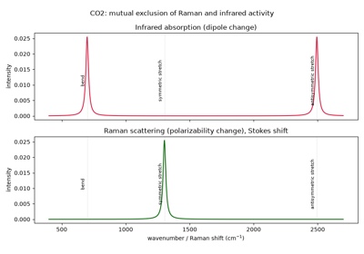
Raman scattering vs. infrared absorption: the mutual exclusion rule for CO2
1925 – 1950 – Franck, Condon, and the Franck-Condon Principle#
James Franck argued qualitatively in 1925 that because electrons move so much faster than nuclei, an electronic transition happens essentially instantaneously on the timescale of nuclear vibration – so the nuclei’s positions and momenta are, to a very good approximation, unchanged by the transition itself, a “vertical” jump on a potential-energy-surface diagram rather than a curved path that follows the nuclei relaxing. Edward Condon supplied the quantitative machinery in 1926-1928, showing that the intensity of a \(v''=0\to v'\) vibronic transition (ground vibrational level of the lower electronic state to level \(v'\) of the upper one) is governed by the square of the overlap integral between the two states’ vibrational wavefunctions – the Franck-Condon factor. For two displaced harmonic oscillators of equal frequency, this reduces to a strikingly simple closed form,
a Poisson distribution over the final vibrational level with mean equal to the dimensionless Huang-Rhys displacement parameter \(S\) – itself named for Kun Huang and Alfred Rhys’s 1950 extension of the same overlap-integral logic to non-radiative transitions in solid-state color centers, work that gave the parameter its now-standard name and notation across both molecular and solid-state spectroscopy. A vibronic progression’s shape is a direct, readable measurement of how much a molecule’s equilibrium geometry shifts upon electronic excitation: a small \(S\) puts almost all the intensity in the \(0\to0\) origin band, while a large \(S\) spreads a long progression peaking near \(v'\approx S\).
Implementation:
huang_rhys_factor() computes
exactly this \(S\);
franck_condon_factor() and
franck_condon_progression()
implement the resulting Poisson-distributed Franck-Condon factors, and
franck_condon_spectrum()
assembles the full vibronic stick spectrum from them.
References: J. Franck, “Elementary Processes of Photochemical Reactions,” Trans. Faraday Soc. 21, 536-542 (1925); E. U. Condon, “A Theory of Intensity Distribution in Band Systems,” Phys. Rev. 28, 1182-1201 (1926), and “Nuclear Motions Associated with Electron Transitions in Diatomic Molecules,” Phys. Rev. 32, 858-872 (1928); K. Huang and A. Rhys, “Theory of Light Absorption and Non-Radiative Transitions in F-Centres,” Proc. R. Soc. Lond. A 204, 406-423 (1950).
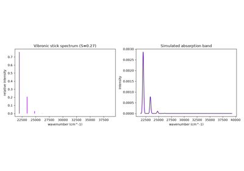
Franck-Condon vibronic progressions in a UV-Vis absorption band
1926 – Dennison and the Quantum Theory of the Rotating Molecule#
David Dennison’s “The Rotation of Molecules” gave the first correct quantum-mechanical treatment of a diatomic molecule’s end-over-end rotation, obtaining its energy levels from the rigid-rotor Schrodinger equation:
with \(I\) the molecule’s moment of inertia – the quantized counterpart of a classical rotor’s continuously variable rotational energy. The evenly-spaced-in-\(J(J+1)\) (rather than evenly-spaced in \(J\)) level structure this equation predicts is the direct theoretical origin of the evenly-spaced line pattern – lines spaced by exactly \(2B\), with \(B=\hbar/(4\pi c I)\) the rotational constant – that a real rotational absorption spectrum shows under the \(\Delta J=\pm1\) selection rule. The same quantized levels let Dennison, the following year, resolve a long-standing anomaly in hydrogen gas’s low-temperature specific heat by recognizing that ortho- and para-hydrogen (nuclear-spin isomers restricted to odd- and even-\(J\) rotational states respectively) behave as two nearly non-interconverting gases with different heat capacities.
Implementation:
chemistrykit.quantum.systems.rigid_rotor.RigidRotor implements
exactly this quantized energy-level formula;
rotational_line_wavenumbers()
converts its \(\Delta J=\pm1\) transition energies into the evenly-
\(2B\)-spaced line positions Dennison’s theory predicts, and
rotational_spectrum()
adds the Boltzmann-population intensity pattern that determines which of
those evenly-spaced lines is actually the strongest.
References: D. M. Dennison, “The Rotation of Molecules,” Phys. Rev. 28, 318-333 (1926); D. M. Dennison, “A Note on the Specific Heat of the Hydrogen Molecule,” Proc. R. Soc. Lond. A 115, 483-486 (1927) (the ortho/para-hydrogen explanation).
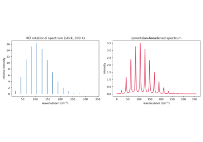
Dennison’s quantized rigid rotor: HCl rotational lines spaced by 2B, with Boltzmann intensities
1929 – Morse and the Anharmonic Oscillator#
Philip Morse showed that replacing the harmonic oscillator’s parabolic potential with the empirical, dissociation-limited form now named after him,
yields a vibrational Schrodinger equation solvable exactly in closed form – unlike almost every other realistic molecular potential – while correctly capturing the two features every real diatomic bond shows and a harmonic oscillator cannot: energy levels that crowd closer together (rather than staying evenly spaced) as the vibrational quantum number increases, and a finite dissociation energy at large bond extension rather than an unphysical potential that rises forever. The resulting level formula, \(E_v=\hbar\omega_e(v+\tfrac12)-\hbar\omega_ex_e(v+\tfrac12)^2\), gave spectroscopists their first quantitative theoretical handle on vibrational anharmonicity – the shrinking overtone spacing that is one of the most immediately visible features of any real measured infrared or Raman vibrational band.
Implementation:
chemistrykit.quantum.systems.harmonic_oscillator.MorseOscillator
solves exactly this potential;
morse_transition_wavenumbers()
reports its \(0\to v\) overtone wavenumbers, and
anharmonicity_from_overtones()
inverts two observed band positions to recover the spectroscopic
constants \(\omega_e\), \(\omega_ex_e\) – exactly the standard
procedure by which a real molecule’s anharmonicity is measured from its
observed overtone spectrum.
References: P. M. Morse, “Diatomic Molecules According to the Wave Mechanics. II. Vibrational Levels,” Phys. Rev. 34, 57-64 (1929).
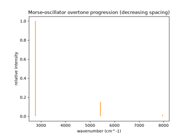
Harmonic vs. Morse IR band positions, and recovering anharmonicity from overtones
1934 – 1955 – Cleeton, Williams, Townes, and the Birth of Microwave Spectroscopy#
Rotational transitions, spaced by only a few wavenumbers, lie at wavelengths far too long for the prism and grating spectrometers built for infrared and visible light – microwave-generation technology simply did not exist to reach them directly until the 1930s. Cleeton and Williams supplied the first working microwave source sensitive enough to find one, in “Electromagnetic Waves of 1.1 cm Wave-length and the Absorption Spectrum of Ammonia” (1934): using a split-anode magnetron of their own construction, they recorded ammonia’s inversion-tunneling absorption near 1.1 cm, the first molecular microwave spectrum ever observed (an inversion-doubling transition rather than a pure end-over- end rotational one, but proof that the technique worked at all). The technique remained a laboratory curiosity for another decade, until World War II radar research produced exactly the tunable, high-power microwave sources (klystrons, magnetrons) rotational spectroscopy needed in bulk; Charles Townes and colleagues, working with surplus radar components after the war, turned microwave spectroscopy from a one-off demonstration into a routine, high-precision structural technique – recorded in Townes and Schawlow’s Microwave Spectroscopy (1955), the field’s standard reference. Once bond lengths could be measured to better than a thousandth of an angstrom this way, the isotope shift in a rotational spectrum’s line spacing became a standard structural check: a heavier isotopologue’s unchanged bond length (the Born-Oppenheimer approximation) but increased reduced mass, and hence increased moment of inertia, predictably lowers every rotational constant and every line position by exactly the same calculable ratio.
Implementation:
isotope_shift_ratio()
computes exactly this reduced-mass-ratio prediction for the shift
between two isotopologues’ rotational constants (and hence every line
position), the calculation Townes-era microwave spectroscopists used
routinely to confirm a rotational-spectrum assignment and refine bond
lengths to the precision the technique made possible.
References: C. E. Cleeton and N. H. Williams, “Electromagnetic Waves of 1.1 cm Wave-length and the Absorption Spectrum of Ammonia,” Phys. Rev. 45, 234-237 (1934); C. H. Townes and A. L. Schawlow, Microwave Spectroscopy (McGraw-Hill, New York, 1955). The 1955 reference is a textbook synthesizing roughly a decade of postwar work by many groups rather than a single discovery paper.
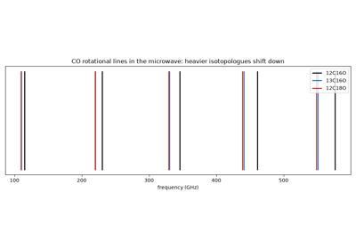
Microwave spectroscopy and the isotope shift: CO isotopologues’ J=1-0 lines in GHz
1939 – 1955 – Wilson’s GF-Matrix Method for Molecular Vibrations#
E. Bright Wilson Jr. worked out a systematic, general procedure for computing a polyatomic molecule’s normal-mode vibrational frequencies from its geometry, atomic masses, and an assumed internal-coordinate force field – rather than solving each new molecule’s vibrational problem from scratch by ad hoc coordinate choices. The method combines a purely geometric kinetic-energy matrix \(G\) (built from the molecule’s masses and equilibrium geometry via the “B-matrix” of internal-coordinate derivatives) with a force-constant matrix \(F\) (the assumed force field) into the generalized eigenvalue problem \(GFL=L\Lambda\), whose eigenvalues \(\lambda_k=(2\pi c\tilde\nu_k)^2\) give the normal-mode wavenumbers directly. Wilson introduced the method in a 1939 paper and, with Decius and Cross, gave it its definitive, comprehensive treatment in the 1955 monograph Molecular Vibrations: The Theory of Infrared and Raman Vibrational Spectra – still the standard reference for normal-coordinate analysis nearly a century later.
Implementation:
chemistrykit.spectro.systems.vibrational.TriatomicNormalModes
implements exactly this GF-matrix method for an A-B-A triatomic: its
internal B-matrix is built by numerical finite differences of the
internal-coordinate functions (bond stretches plus a bend, linearized
for a linear equilibrium geometry per Wilson, Decius and Cross’s own
prescription), combined into the mass-weighted \(G\) matrix and a
diagonal valence-force-field \(F\) matrix, and solved via
solve().
References: E. B. Wilson Jr., “A Method of Obtaining the Expanded Secular Equation for the Vibration Frequencies of a Molecule,” J. Chem. Phys. 7, 1047-1052 (1939); E. B. Wilson Jr., J. C. Decius, and P. C. Cross, Molecular Vibrations: The Theory of Infrared and Raman Vibrational Spectra (McGraw-Hill, New York, 1955).
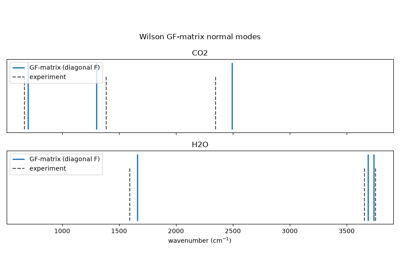
Wilson’s GF-matrix method: CO2 and H2O normal-mode frequencies from the G and F matrices
1939 – 1971 – Herzberg’s Molecular Spectra and Molecular Structure#
Gerhard Herzberg spent four decades systematizing molecular spectroscopy into the coherent theoretical and experimental discipline it is today, capturing that work in a three-volume treatise – Spectra of Diatomic Molecules (1939, revised 1950), Infrared and Raman Spectra of Polyatomic Molecules (1945), and Electronic Spectra and Electronic Structure of Polyatomic Molecules (1966) – that remained the field’s standard reference for generations of spectroscopists, alongside his own experimental discoveries of numerous free radicals’ spectra. He was awarded the 1971 Nobel Prize in Chemistry “for his contributions to the knowledge of electronic structure and geometry of molecules, particularly free radicals.” One recurring subtlety Herzberg’s second volume treats carefully is exactly the kind this package’s own normal-mode code has to confront directly: a linear triatomic’s bending vibration is genuinely doubly degenerate (bending is equally easy in any direction transverse to the molecular axis, since the molecule has full cylindrical symmetry about it), a fact any normal-coordinate treatment that solves only an in-plane subset of internal coordinates has to acknowledge explicitly rather than silently under-report.
Connection:
chemistrykit.spectro.systems.vibrational.TriatomicNormalModes
follows Herzberg’s own prescription (Ch. I.3 of the 1945 volume) for a
linear equilibrium geometry’s ill-defined bond-angle coordinate –
switching to a linearized transverse-displacement bend coordinate that
stays well-behaved at exactly 180 degrees – and its
is_linear
flag and docstring make the resulting bend mode’s double degeneracy
explicit rather than silently reporting only one of the two degenerate
components as if it were the whole story.
References: G. Herzberg, Molecular Spectra and Molecular Structure I. Spectra of Diatomic Molecules, 2nd ed. (Van Nostrand, New York, 1950); Molecular Spectra and Molecular Structure II. Infrared and Raman Spectra of Polyatomic Molecules (Van Nostrand, New York, 1945).
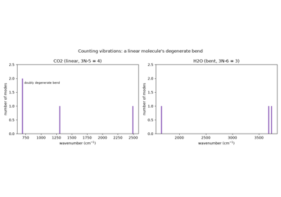
Herzberg’s linear-molecule rules: CO2’s doubly degenerate bend and 3N-5 vibrations
1946 – Bloch, Purcell, and the Discovery of Nuclear Magnetic Resonance#
Felix Bloch at Stanford and Edward Purcell at Harvard, working entirely independently and using very different apparatus (Bloch’s “nuclear induction” detected resonance via an induced signal in a pickup coil; Purcell’s detected it via resonant absorption of radiofrequency power in a solid), each announced in early 1946 that placing atomic nuclei with nonzero spin in a strong static magnetic field and irradiating them with radiofrequency radiation at exactly their spin’s Larmor precession frequency produces a sharp resonant response – nuclear magnetic resonance. The two groups shared the 1952 Nobel Prize in Physics for the discovery. What made NMR spectroscopy rather than merely NMR physics was the observation, made within a few years by both groups’ successors, that a given nucleus’s exact resonance frequency depends measurably on its local chemical (electronic) environment – the chemical shift – so that a molecule’s NMR spectrum reports directly on its chemical structure rather than being a single line per isotope.
Implementation: larmor_frequency()
gives the resonance frequency \(\nu_0=\gamma B_0/(2\pi)\) that Bloch
and Purcell detected, and chemical_shift_ppm()
converts a resonance frequency to the field-independent chemical-shift
scale, \(\delta=10^6(\nu-\nu_\text{ref})/\nu_\text{ref}\). Every
other function in chemistrykit.spectro.systems.nmr takes its input on
that ppm scale.
References: F. Bloch, W. W. Hansen, and M. Packard, “Nuclear Induction,” Phys. Rev. 69, 127 (1946); E. M. Purcell, H. C. Torrey, and R. V. Pound, “Resonance Absorption by Nuclear Magnetic Moments in a Solid,” Phys. Rev. 69, 37-38 (1946).
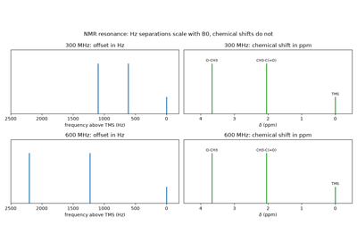
Nuclear magnetic resonance: Larmor frequencies and the field-independent chemical shift
1952 – 1953 – Ramsey, Purcell, and the Theory of Spin-Spin Coupling#
Once chemical shifts had been observed, NMR spectroscopists quickly found something odder still: many resonances were not single lines but evenly split multiplets, with a splitting (in Hz) independent of the external magnetic field’s strength – ruling out a direct through-space dipolar coupling (which would scale with field-independent geometry alone, but also average to zero for molecules tumbling freely in solution) as the cause. Norman Ramsey and Edward Purcell identified the mechanism in 1952: an indirect, through-bond coupling mediated by the bonding electrons themselves, communicated from one nucleus to the electron spins via the Fermi contact interaction and from there to the second nucleus – a genuinely quantum-mechanical, electron-mediated effect rather than a classical dipole-dipole interaction. Ramsey worked out the full perturbation-theory treatment the following year. For a spin-1/2 nucleus weakly coupled (in the sense that the coupling constant \(J\) is much smaller than the chemical-shift difference, in Hz) to \(n\) magnetically equivalent spin-1/2 neighbors, the result is the “n+1 rule”: the resonance splits into \(n+1\) lines with relative intensities given by the binomial coefficients – Pascal’s triangle – symmetric about the unperturbed shift.
Implementation:
multiplicity() implements exactly
the n+1 rule, and
pascals_triangle_intensities()
the resulting binomial relative intensities;
first_order_multiplet() builds a
single multiplet from one set of equivalent coupled neighbors, and
multi_coupling_multiplet()
generalizes it to several inequivalent coupling partners acting
independently and multiplicatively – a genuine doublet of triplets, for
instance.
References: N. F. Ramsey and E. M. Purcell, “Interactions between Nuclear Spins in Molecules,” Phys. Rev. 85, 143-144 (1952); N. F. Ramsey, “Electron Coupled Interactions between Nuclear Spins in Molecules,” Phys. Rev. 91, 303-307 (1953).
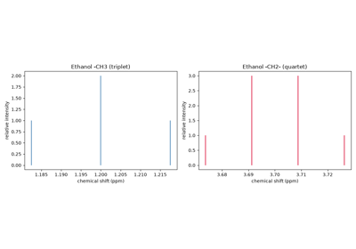
Spin-spin (J) coupling and the n+1 rule: ethanol’s triplet/quartet and a doublet of triplets
1959 – 1963 – Karplus and the Dihedral-Angle Dependence of Vicinal Coupling#
Once spin-spin coupling was understood as an electron-mediated effect, the next question was what sets its size. Martin Karplus, using a valence-bond calculation of the Fermi-contact mechanism for ethane-like fragments, found in 1959 that the three-bond (vicinal) H-C-C-H coupling depends strongly on the dihedral angle \(\phi\) between the two C-H bonds:
The coupling is large for eclipsed and anti protons and close to zero near \(90^\circ\). In 1963 Karplus restated the relation in the general form \(^3J=A\cos^2\phi+B\cos\phi+C\) and warned that its coefficients depend on substituents, bond lengths and angles. It became one of the most widely used tools for working out conformations from NMR data, for example to tell axial from equatorial protons in cyclohexane rings and sugars, or to estimate backbone angles in peptides.
Implementation: karplus_coupling()
evaluates Karplus’s original 1959 curve by default. It also evaluates
the general three-term form when given coefficients (A, B, C).
References: M. Karplus, “Contact Electron-Spin Coupling of Nuclear Magnetic Moments,” J. Chem. Phys. 30, 11-15 (1959); M. Karplus, “Vicinal Proton Coupling in Nuclear Magnetic Resonance,” J. Am. Chem. Soc. 85, 2870-2871 (1963).
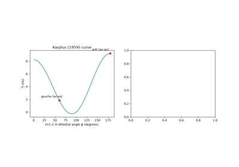
The Karplus relation: vicinal 3J(H,H) coupling as a function of dihedral angle
1966 – Ernst, Anderson, and Fourier-Transform NMR#
Early NMR spectrometers were continuous-wave instruments. They swept the field or frequency slowly through each resonance, one frequency at a time, so most of each scan was spent recording empty baseline. Richard Ernst and Weston Anderson at Varian showed in 1966 that a short, intense radio-frequency pulse excites every resonance at once. The resulting free-induction decay (FID),
holds the whole spectrum, and a Fourier transform recovers it. Each line becomes a Lorentzian of width \(1/(\pi T_2)\). Since one FID takes about as long to record as one line in a slow sweep, many FIDs can be averaged in the time of a single continuous-wave scan, and signal-to-noise grows as the square root of the number of scans. This large gain in sensitivity made routine \(^{13}\mathrm{C}\) NMR practical. The pulse-and-transform approach also led to two-dimensional and multidimensional NMR. Ernst received the 1991 Nobel Prize in Chemistry for these developments.
Implementation: free_induction_decay()
synthesizes the FID for a set of resonance offsets, amplitudes and a
\(T_2\), and fid_to_spectrum()
Fourier-transforms it into an absorption-mode spectrum on a
frequency axis in Hz.
References: R. R. Ernst and W. A. Anderson, “Application of Fourier Transform Spectroscopy to Magnetic Resonance,” Rev. Sci. Instrum. 37, 93-102 (1966).
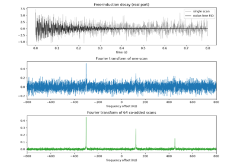
Fourier-transform NMR: from a free-induction decay to a spectrum